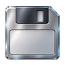

EP motivieren und haben keinen Einfluss auf deine Noten.
Speichere deinen Lernstand als JSON-Datei oder lade eine vorhandene Sicherung.
Die Datei landet im Downloadordner deines Browsers, normalerweise „Downloads“.
Wenn du die KI-Hilfe nutzt, überträgt AlgoLab die Aufgabenstellung, deinen aktuellen Code, das Ergebnis der lokalen Prüfung und die Zahl deiner Versuche über einen gesicherten Zwischendienst an Google Gemini.
Nicht übertragen werden dein Name oder Kürzel, deine Klasse, Punkte, EP und dein Lernstand. Schreibe trotzdem keine persönlichen Daten in deinen Code.
Bei kostenlosen Zugängen kann der Anbieter Inhalte zur Verbesserung seiner Dienste verwenden. Die KI kann sich irren und gibt bewusst keine fertige Lösung; Punkte vergibt ausschließlich die automatische Prüfung. Die Zustimmung gilt nur für diese Browsersitzung.
Nutzungsbedingungen des Anbieters ↗